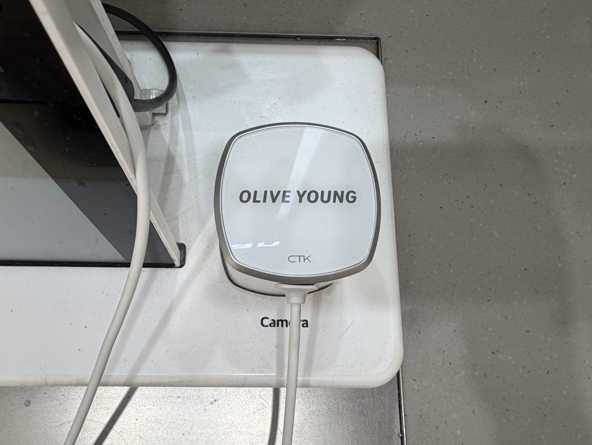
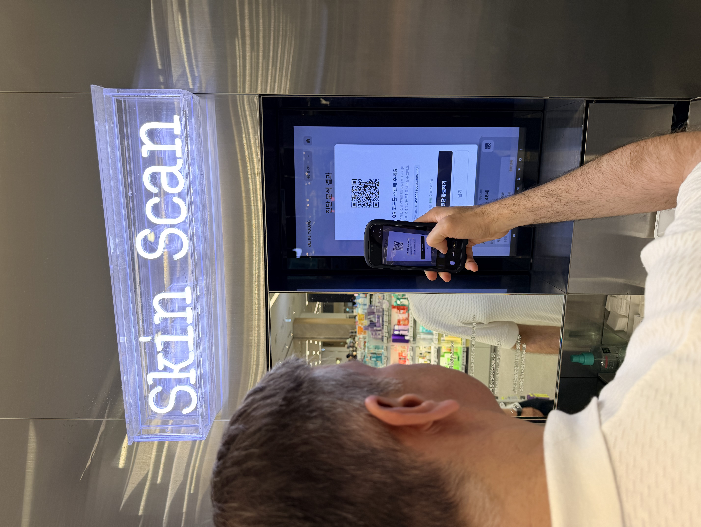
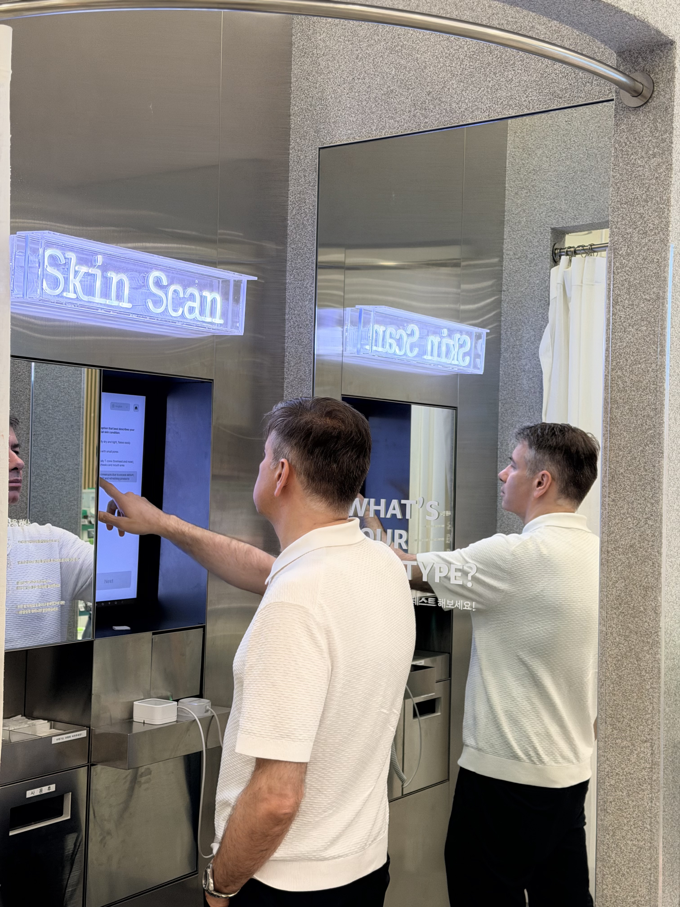
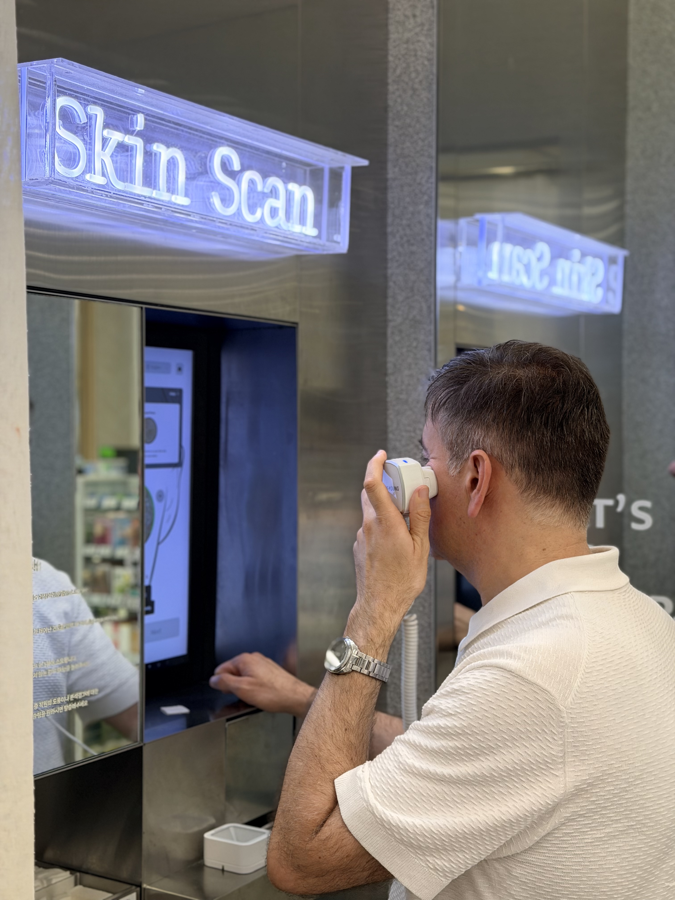
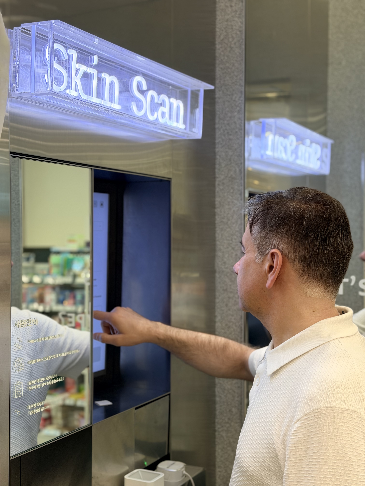

Why Hardware Alone Is Not Enough
A skin analyzer device is an important starting point for professional consultation. Cameras, measurement hardware, lighting, and guided capture flows help create a more consistent way to observe visible skin, scalp, and hair condition.
But captured images and raw measurements do not create a complete consultation by themselves. The data needs interpretation, a clear report, a consultant workflow, customer-friendly language, and a path toward product recommendation and revisit comparison.
The point is not that hardware is unimportant. The point is that hardware should be treated as the first layer of a connected AI skin diagnosis system, not the entire customer experience.
What Is A Skin Analyzer Device?
A skin analyzer device is the hardware layer that supports measurement or capture of skin, scalp, and hair condition. It may support facial skin measurement, scalp image capture, hair and scalp observation, a consistent consultation setup, and an in-store Skin Scan experience.
In beauty retail, the device should be understood as a tool for visualization and consultation support. It should not be presented as a medical diagnosis device or as a replacement for professional medical care.

What Is Skin Analysis Software?
Skin analysis software is the interpretation and workflow layer that turns measurement data into consultation-ready information. It may include AI-assisted analysis, visual result reports, skin, scalp, and hair category organization, consultant interpretation, customer-facing explanation, product recommendation support, CRM, and revisit comparison.
Software matters because it structures the experience. It helps consultants decide what to explain first, how to connect results to products, and what should be compared when the customer returns.

Device vs Software Comparison
| Layer | Main Role | What It Handles | Why It Matters In Retail Consultation |
|---|---|---|---|
| Skin analyzer device | Measurement hardware | Skin, scalp, and hair capture, lighting, camera, measurement touchpoint | Creates a consistent starting point for consultation. |
| Image or measurement data | Source data | Photos, area images, observed data, repeat measurement records | Provides a basis for interpretation and future comparison. |
| AI skin analysis software | Interpretation and structure | AI-assisted analysis, category organization, visual indicators | Helps consultants explain results consistently. |
| Diagnostic report | Customer explanation | Images, summaries, indicators, consultation points | Improves customer understanding and trust. |
| Consultant UI | Retail workflow | Explanation order, result navigation, consultation prompts | Reduces variation across staff and stores. |
| Product recommendation logic | Product matching support | Concern-based product groups, routines, campaign or inventory links | Turns analysis into a more personalized recommendation. |
| CRM / revisit management | Relationship and record layer | Visit records, saved results, change comparison, follow-up consultation | Extends a one-time scan into repeat consultation. |
How The Complete AI Diagnosis System Works
A complete system connects measurement, image-based data capture, AI software analysis, diagnostic report generation, consultant interpretation, product or care direction, and saved revisit data.
When these layers work together, the store experience becomes more than a photo capture moment. It becomes a repeatable beauty-tech consultation model that supports trust, product matching, CRM, and customer retention.

Skin, Scalp, And Hair Analysis In One System
Customers do not experience skin, scalp, and hair as disconnected concerns. Facial oiliness, scalp condition, hair damage impression, and styling needs all contribute to the customer’s overall beauty experience.
An integrated system helps beauty teams support broader consultation. Skin analysis, AI scalp analysis, and hair analysis can be presented as one connected journey instead of separate touchpoints.
Skin analysis
Helps consultants explain visible concerns such as tone, pores, texture, oiliness, dryness, and care priorities.
Scalp analysis
Supports scalp care consultation by visualizing oiliness, dryness, flakes, sensitivity signals, and other beauty-care indicators.
Hair analysis
Connects hair condition, shine, damage impression, density appearance, and styling concerns to care recommendations.


Why This Matters For Offline Beauty Retail
H&B stores, beauty brand stores, retail popups, scalp and hair care brands, healthcare and pharma beauty brands, and B2B partners need consultation tools that help customers understand results quickly and confidently.
Clear explanation, product matching, repeat consultation, personalized recommendation, and store-level data insight are what turn a skin scan into a useful retail experience.
ChoiceDx Perspective
ChoiceDx by ChoiceTech Korea connects AI skin, scalp, and hair analysis with offline retail consultation.
ChoiceDx is not just a camera and not just software. It is a connected beauty-tech diagnosis system for Skin Scan experiences, B2B consultation support, product recommendation, CRM, and revisit management.
When To Use This Guide
This guide is for beauty retailers, cosmetic brands, H&B store operators, retail popup planners, scalp and hair care brands, B2B partners, teams comparing skin analyzer devices and software platforms, and teams designing AI beauty consultation workflows.
https://choicedx-official.github.io/choicedx-ai-skin-diagnosis/outputs/guidebook-why-accurate-skin-diagnosis-en.html
FAQ
What is the difference between a skin analyzer device and skin analysis software?
A skin analyzer device captures images or measurement data, while skin analysis software interprets that data and turns it into reports, consultation workflows, product recommendation support, CRM, and revisit comparison.
Is a skin analyzer device enough for professional consultation?
No. The device is important, but professional consultation also needs AI analysis, visual reports, consultant interpretation, customer-facing explanation, product recommendation, and revisit management.
What does AI skin analysis software do?
It organizes image-based data, identifies consultation categories, creates visual reports, and supports explanation and recommendation workflows.
Can one system support skin, scalp, and hair analysis?
Yes. A connected system can support facial skin analysis, AI scalp analysis, and hair analysis within one consultation journey.
How does skin analysis software support product recommendation?
It connects analysis results and customer concerns to relevant product groups, routines, or retail recommendation options.
What is a diagnostic report?
A diagnostic report is a visual summary of measurement and AI-assisted analysis results designed for customer explanation.
How does revisit comparison work?
Saved results from earlier visits are compared with current results to support follow-up consultation and explain visible changes over time.
Is this a medical diagnosis?
No. This guide describes beauty consultation and product recommendation support. It is not medical diagnosis, treatment, cure, or clinical advice.
Where can a professional skin analyzer system be used?
It can be used in beauty brand stores, H&B retail, popups, consultation counters, scalp care spaces, training centers, and B2B beauty-tech programs.
How does ChoiceDx connect device, software, and consultation?
ChoiceDx connects measurement hardware, AI analysis software, diagnostic reports, consultant UI, product recommendation, CRM, and revisit comparison into a Skin Scan experience.
Glossary
This guide describes AI-based skin, scalp, and hair analysis for beauty consultation and product recommendation. It is not a substitute for medical diagnosis or treatment.